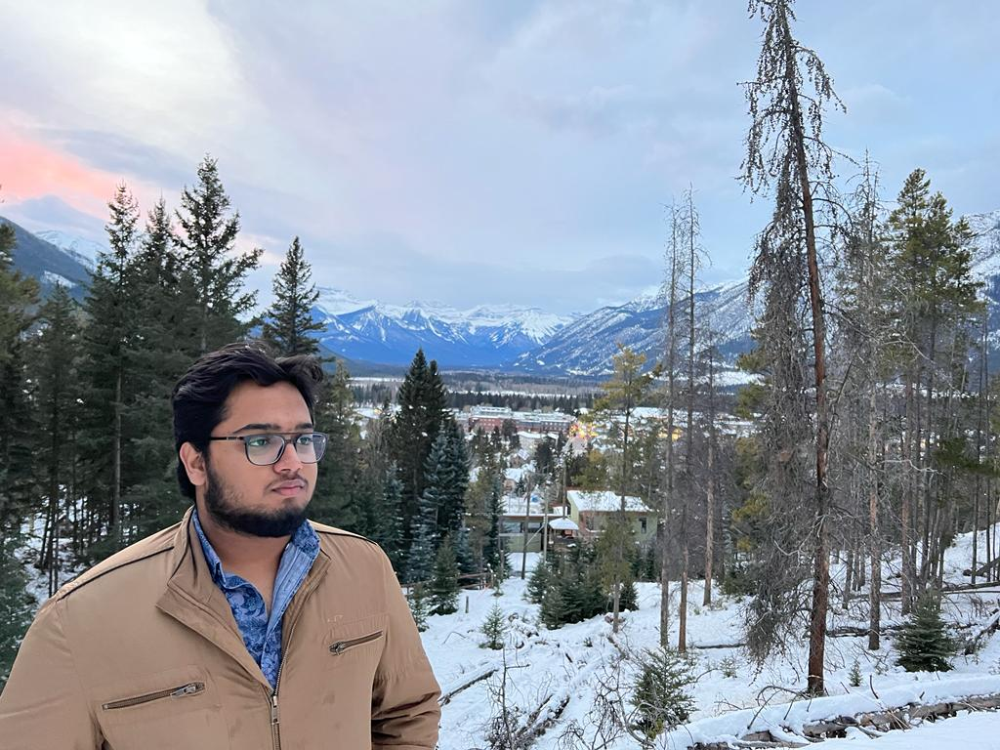

Biography

My Name is Bhupesh. Currently I am pursuing Computer
Science & Enginnering at _______ University.
I am belong to joint Family. My Hobbies are :
Playing Badminton, Reading books, Gardening Etc.
My Educational Aspiration consist of acuring a bachelor's degree in any information Technology that would
assist me in pursuing an Enginnering carrear as Enginner.
On the other hand, My carrer vision is to one day be able to provide
Affordable Things and best technology to the people.
However i am certian that if i do not complete my college degree i could
never have the opportunity to achive my carrer goals.
I decided that i will attain a carrer as a Enginner since my paisson has always
been assisting others and trying to improve their quality of life.
Therefore, I think that pursuing such a carrer will provide me the opportunity to help improve
the community's health quality and conditionand learn about their medical needs.
After Becoming a Certified Enginner ,I want to Specialize in
software Enginnering, the study of machine learning.
Furthermore, I Want to contribute back to understand
quality of life. This will help contribute to the physical development
of kids and offer a solution to maintain the quality of life of chils.
Therefore, I Am commited to working hard in school and looking for opportunities
that could help me make my goals a reality.
Thank You!